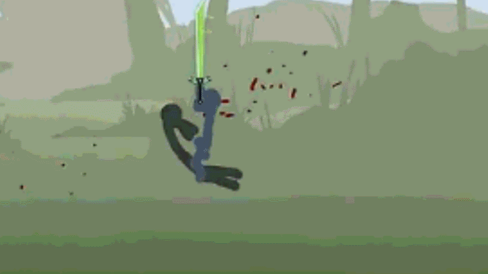

Scratch
多变好玩的创意
特效的另一种变化
点击图片即可体验Scratch
这是在 创作过程 中的一个 创新点. 是通过画笔 和 图章 模块实现的 幻影 效果。 详情效果可返回主页体验，这是绝大部分scratch教育者未探索过的一个知识点。 
结合对应的兴趣、爱好进行创作
产品除了能传递知识点 以外，最重要的就是共鸣 ，通过结合 兴趣、爱好，来进行指导教育，效果更佳 。
操作模式为WASD，技能为U，操作模式为↑↓←→，技能为0（数字）。
体验课

简单有趣的体验课，让零基础的学生也能体验到编程的快乐。
科学拓展课
通过研究生/博士论文的严谨数据制作的编程作品，让学生融入到科创的学习当中，还需要撰写实验报告，如学校有条件，可结合实物做出相对应的作品及课件。
Scratch课件制作流程
课程导入/课程知识点回顾
本节课程成品展示
本节课程知识点/考点/课中提问及解答
课后作业
课程总结
Python 科幻有趣的编程之旅

通过炫酷的电影或者好看的海龟画图作为Python的导入点，深受学生喜爱
Python课件
制作流程
- 课程导入
- 英语单词/语法回顾/课前提问
- 本节任务要求/本节英语单词/新语法
- 新语法/英语单词打字练习
- 课后作业/课程总结
打字练习可以由老师自由发挥
- 可在电脑上的记事本打字练习
- 可以在黑板上书写
- 在打字练习中也要注意语法结构
注重引导
- 课件上尽量做到引导学生思考，自我进行代码练习
- 运用现实生活例子来理解代码、语法
硬件编程
-
注重讲解代码块的应用、编译、上传、代码的作用/纠错
硬件部分
-
注重讲解如何连线，元器件的作用，电路图
测试部分/纠错
-
通过自测验证是否达到预想效果
 软件部分
软件部分
硬件编程
课件制作
| 流程 | 内容 |
|---|---|
| Item 1 | 课程导入/知识点回顾 |
| Item 2 | 本节任务要求，所需元器件 |
| Item 3 | 元器件的作用/历史由来 |
| Item 4 | 根据任务要求，相关代码/语法的作用及课中提问 |
| Item 5 | 连接实物，检查反馈结果 |
课程设计
课程设计除了要契合学生方面，也就是课程导入、知识点、课程作业要设计合理以外，也要契合老师方面，每个章节切换合理，逻辑通顺，还要养成研讨会的习惯，不断去其糟粕,取之精华，交流也是设计中的重要组成部分，内容设计上采用：
温故旧知识➡️ 引出新案例 ➡️ 引导学生发现问题 ➡️ 教授学生解决问题所需新知识 ➡️ 穿插讲解能够产生联系的旧知识 ➡️ 引导学生解决问题 ➡️ 巩固练习。
内容即所要教授学生的知识点，考虑到授课对象的特殊性（中小学生），一定要秉承学生用的着的原则，也就是说学生使用教授的知识点去解决案例中出现的问题，让学生带着解决问题的强烈动力去接受和锻炼知识技巧。同时充分尊重学生个体之间的学习差异性及学生的认知习惯，每个案例内容中涉及的知识点不宜过多（一般为3～5个新知识点+ 2～3个旧知识点），采用温故知新的教学模式，进一步巩固已学的旧知识，并在此基础上建立新旧知识的联系，加强学生对知识的理解掌握。
“挖坑”开拓创新思维
课程作业不限制全部人的完成效果，只给定大概的方向，引导学生思考，我们都知道学习在大多数情况下都是被动的，而用不到的知识学习更是效果奇差的，作为过来人的我们应该都深有体会，想当年为了记一个数学公式是花了多大的功夫，而到如今却基本都忘。而这正是因为学到的知识“无用武之地”，要不是为了所谓的考试，我想啥都记不住。人往往只有在解决问题时的学习是最高效的，因为有着极强的目的性——解决遇到的问题。因此在案例中应该出现问题，且这类问题是贴近生活（学生能够在实际中遇到），他们用所学的知识不能解决或是解决起来特别麻烦，以此为引激发学生解决问题的欲望。